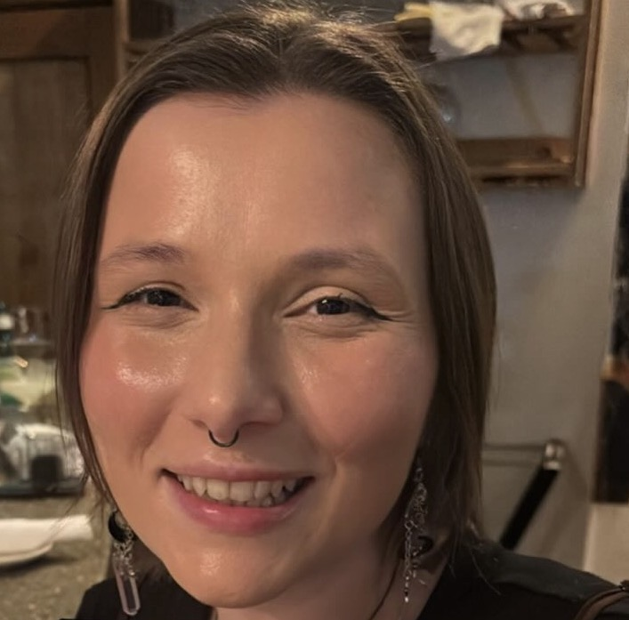

Account Director · Data Analytics · PR Strategist
Eight years shaping narratives for health, tech, and nonprofit clients — now deepening that work with a master's in Analytics. Based in Portland, Maine.
"I've always loved stories. That same fascination now guides my work, through data, insight, and strategy."
I've always loved stories. As a kid, I could spend hours lost in fantasy novels, exploring new worlds and uncovering meaning through imagination and detail. That same fascination with storytelling guides my professional journey, now through data, insight, and strategy.
Over the past eight years, I've built a career in public relations and strategic communications, advancing to an Account Director role leading clients across healthcare, technology, and nonprofit sectors. I've developed a strong foundation in media strategy, executive communications, thought leadership, and brand reputation management, helping organizations shape narratives that build trust and drive measurable impact.
As my work evolved, I became increasingly interested in the data behind the stories, analyzing media trends, campaign performance, and audience engagement to inform smarter strategy. That curiosity led me to pursue a Master of Professional Studies in Analytics at Northeastern University with a concentration in Evidence-Based Management, where I'm expanding my technical expertise to complement my communications background. I bring a strong understanding of how to deliver client insights by analyzing trends across the healthcare, tech, and nonprofit sectors, with proficiency in statistical analysis and data visualization, and a proven ability to communicate findings through detailed technical reports.
I'm passionate about using data to tell meaningful stories, connecting information to insight and insight to impact. By blending analytical thinking with creative communication, I help organizations uncover what the numbers reveal and translate that into strategies that resonate and deliver results.
Outside of work, I volunteer with animal welfare organizations, and I'm a former radio DJ and Station Manager at WSOU 89.5 FM, a Marconi Award-winning radio station. The thread running through all of it? A love for story, craft, and the details that make an audience lean in.
Experience
Ericho Communications · Fully Remote
5W Public Relations · New York, New York
RLM Public Relations · New York, New York
Relativity Ventures · New York, New York
Capabilities
Designing and executing campaigns that land in top-tier outlets. Pitch development, media relations, and editorial positioning.
Speeches, executive thought leadership, talking points, and content that positions leaders as authoritative voices.
Rapid-response communications, sentiment monitoring, and reputation protection across high-stakes situations.
Statistical modeling, regression analysis, and data exploration using R, Excel, and SQL to surface meaningful insights.
Translating complex datasets into clear, compelling visuals using Tableau, Power BI, and R Markdown reporting.
Share-of-voice analysis, competitive benchmarking, and long-term narrative strategy to build and protect brand equity.
Education
Northeastern University · Roux Institute · 2025 to 2027 · GPA 4.0
Concentration in Evidence-Based Management
Building technical fluency in R, SQL, statistical modeling, and Tableau alongside existing communications expertise.
Education
Seton Hall University · 2013–2017 · GPA 3.91
Dean's List every semester. Minor in Music Technology. Station Manager at WSOU 89.5 FM, a Marconi Award-winning radio station. University Academic Scholarship.
Contact
Whether you need a communications strategist, a thought leadership partner, or someone who bridges business intelligence and data analysis with storytelling, I'd love to connect.